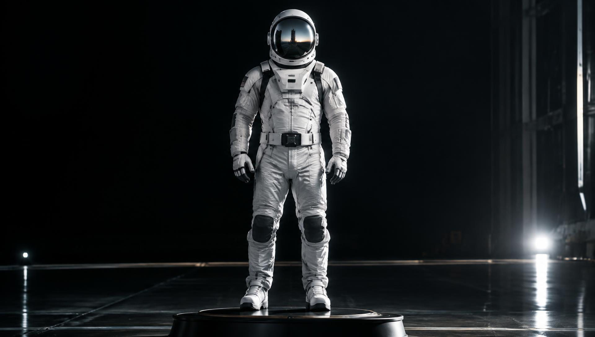
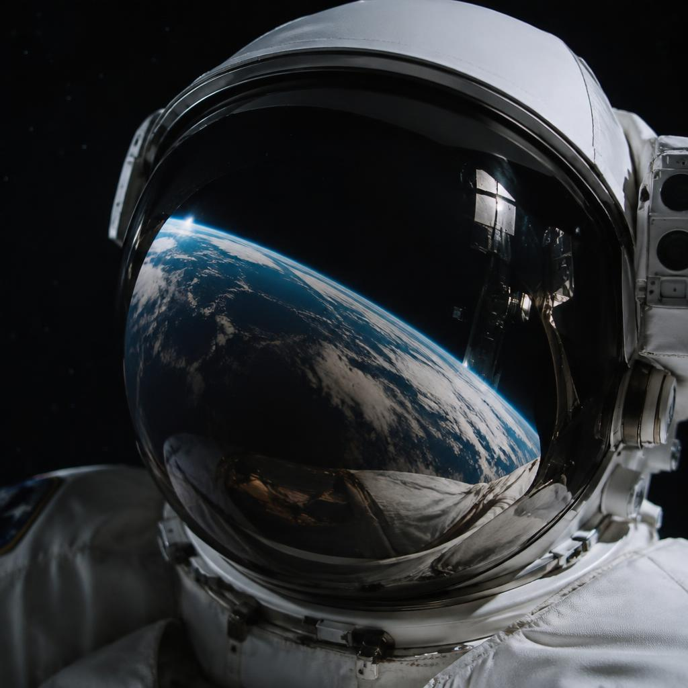
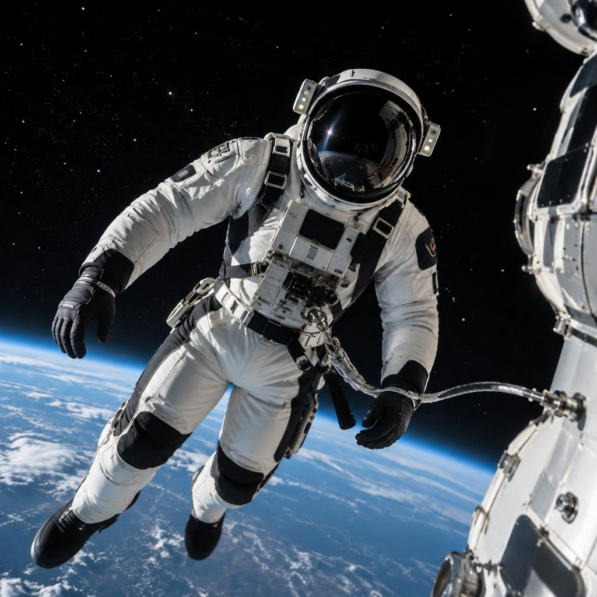
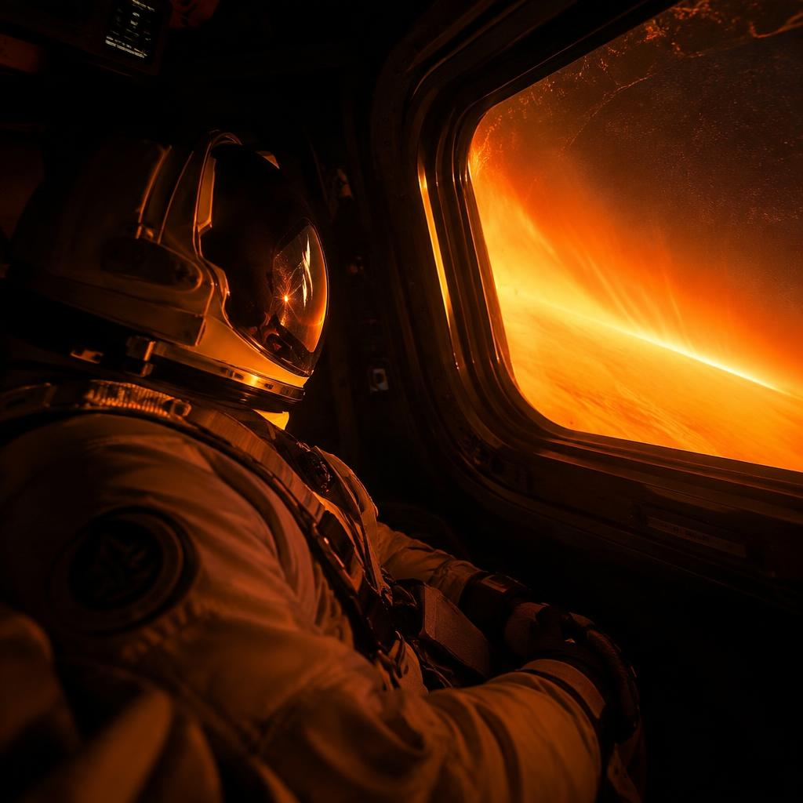

Human Spaceflight · Suits
Space Suits
Space is a vacuum at −270 °C, and nothing protects a human body from it except what they wear. Two suits, two jobs: survive the flight, work in the void.

What vacuum actually does
Unprotected, a body in vacuum stays conscious for roughly ten seconds. Air pressure keeps the fluids in our tissues dissolved; at near-zero pressure they boil at body temperature. Oxygen must also be delivered above a minimum pressure for lungs to absorb it at all.
A space suit is therefore not clothing — it is a one-person spacecraft shaped like a garment. Its innermost layer holds about one third of an atmosphere of pure oxygen against the skin; outer layers add insulation against temperature swings of hundreds of degrees between sunlight and shadow, plus micrometeoroid protection.

Moving in a pressurised balloon
A pressurised suit is stiff: inflate a sleeve and it wants to stay straight. Our EVA suit solves this with jointed bearings at the shoulders, elbows, wrists, hips and knees that rotate rather than stretch, letting the pressurised layers stay round while the limb bends. The hard upper torso distributes load and anchors the helmet and life support.
Working in vacuum means working against the suit's own pressure, so every task is trained in a neutral-buoyancy pool for months. Tools are designed to be gripped with thick gloves, and every movement is planned to conserve energy — a spacewalk is a workout at 250 km/s.

Connected to the ship
During launch and reentry, crews wear the flight suit — a lighter, escape-rated version. It plugs into the capsule through umbilicals that supply oxygen under pressure, electrical power, communications and cooling water. If the cabin loses pressure at any point of flight, the suit keeps the crew alive without them touching a thing: helmet visors close automatically and pressure flows.
The same suit is worn for docking emergencies, depressurisation drills and splashdown — the rule is simple: suits on from suit-up to recovery, no exceptions.
Built, tested and fitted in-house
Every suit is manufactured for the individual crew member — from laser-scanned torso casts to customised helmet sizing — then tested in vacuum chambers at full pressure. Suits are qualified by flying them: every uncrewed capsule test flies instrumented suits, and flight suits are pressure-checked at the pad two hours before launch.
Next: Life in Orbit